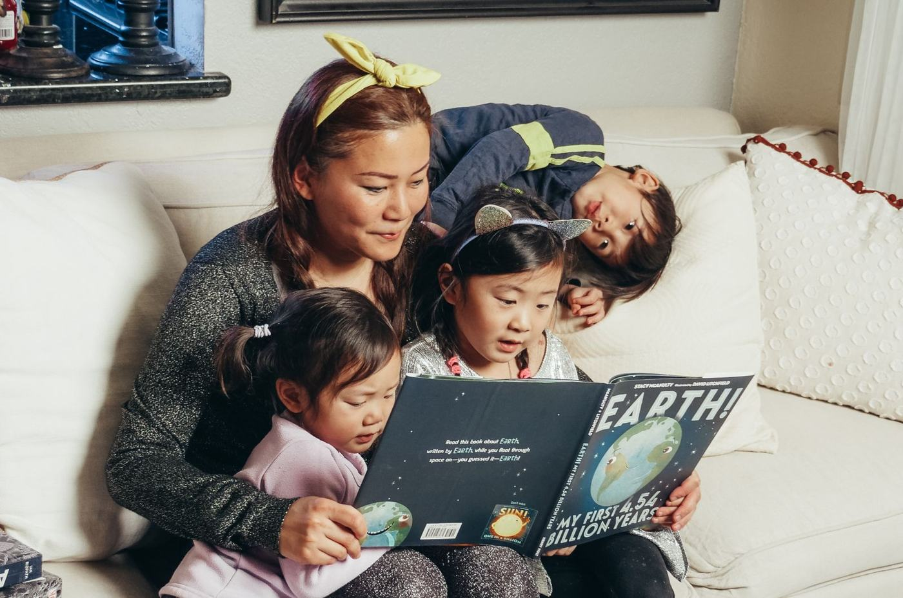

Načelo 1
SOS mama
Svaka obitelj ima svoju SOS mamu ili skrbnika koji živi s djecom u kući. Ona kuha, vodi ih liječniku, sjedi na roditeljskim sastancima i budi se kad netko noću sanja ružno. Nije smjena, nego odnos koji traje.
- Živi s djecom 24 sata
- Stalna osoba, bez rotacije
- Stručna podrška i edukacija
Sigurna privrženost
Kako postati SOS mama
